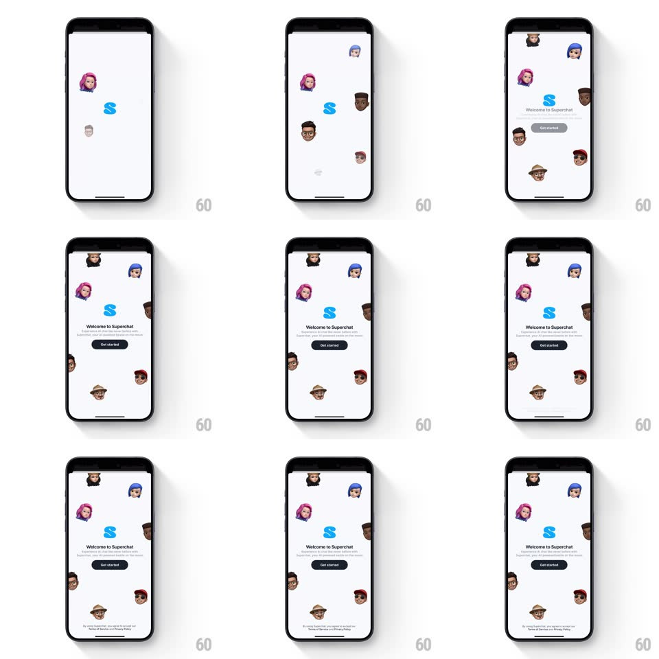

Media
Frame-by-frame

Rebuild this interaction 1:1: Superchat's splash - Memoji heads slide in staggered from the screen edges to float around the center S logo, then "Welcome to Superchat", the subtitle, and the "Get started" pill slide up with a springy bounce.

Rebuild this interaction 1:1: Superchat's splash - Memoji heads slide in staggered from the screen edges to float around the center S logo, then "Welcome to Superchat", the subtitle, and the "Get started" pill slide up with a springy bounce.
## Integration
Integration: stack-agnostic spec - springs given as stiffness/damping, timed motions as duration + curve; map every value to your framework and animation library of choice.
## Scene
A white splash: the blue Superchat S logo dead center, ringed by ~8 Memoji heads scattered asymmetrically around the edges (pink hair, blue cap, dark skin, red cap, straw hat...). Below the logo: "Welcome to Superchat", a grey subtitle line, the black "Get started" pill, and a small terms caption at the bottom.
## Motion spec
Pattern: staggered edge-entry character field + content bounce.
- The S logo fades/scales in first (0.6 -> 1, 300ms).
- Memoji heads fly in one by one from off-screen edges (each from its nearest side), 90ms apart: slide + spring (~300/16, visible overshoot and settle, 500ms each) - they bobble as they land.
- Once the heads are in, they idle with a slow float (translateY +/- 6pt, 3s loops, phase-offset per head) and a few blink.
- The bottom block ("Welcome to Superchat" + subtitle + Get started pill) slides up from below (spring ~320/18, overshoot bounce, 550ms) with the text fading in; the terms caption fades in last (250ms later).
- Get started pill presses with a scale 0.96 bounce.
## Calibration
- Heads enter from the side they're closest to - nothing crosses the whole screen.
- The overshoot is small and fast; playful, not sloppy.
## Reduced motion
Heads and content fade in place; no float loop.
## Don't miss
- Heads slightly overlap the screen edges - the field feels bigger than the viewport.
- The float phases are all different so the group never moves in sync.